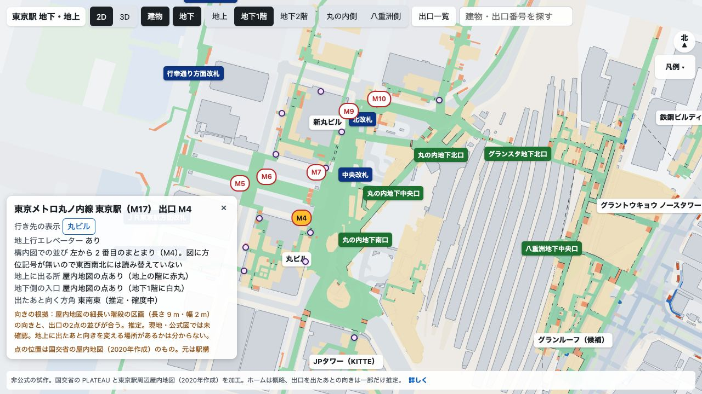
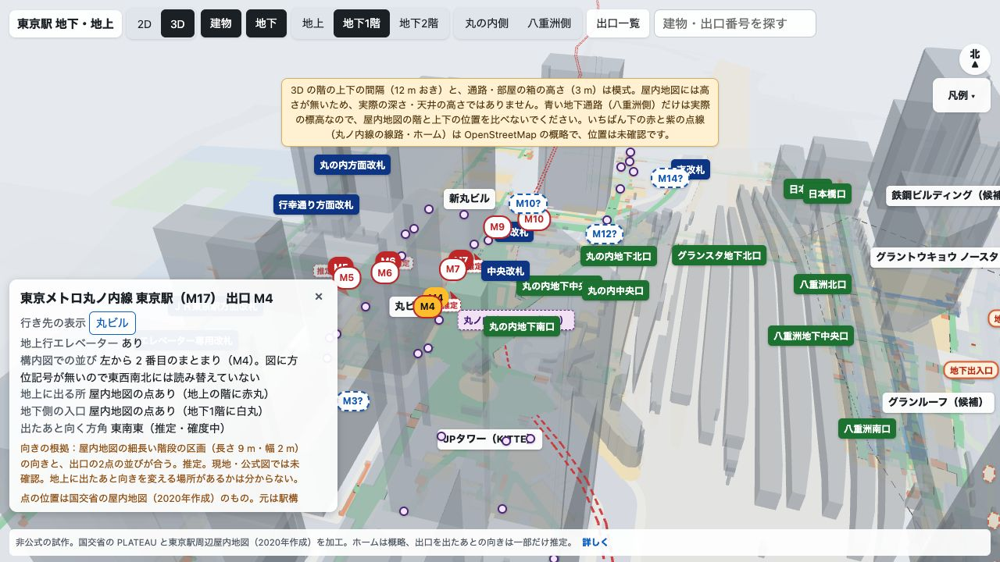
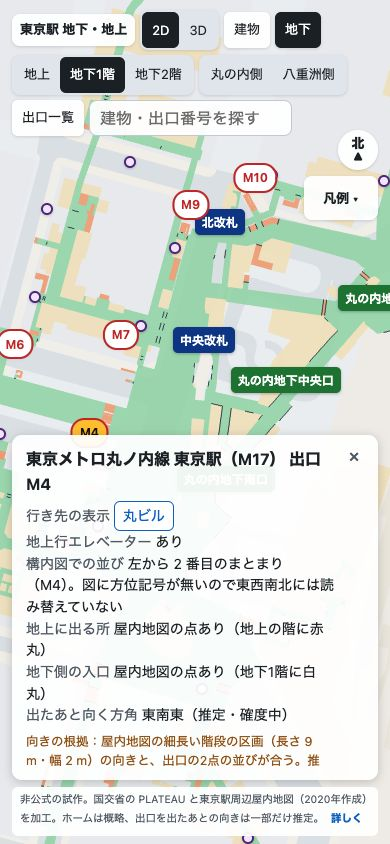

結論屋内地図は取得済み。重点範囲の図形は試作に入っています。出口の意味・精度・資料時点に確認が残ります。
要判断なし。今回は資料と試作の検証結果を共有します。
詳細下の動画と、収録範囲・残る確認事項をご覧ください。
VOICEVOX:ずんだもん（ノーマル）。資料から作った確認画面を実際に表示・撮影し、日本語字幕と注釈を加えています。地図アプリの操作録画ではありません。
丸ノ内線東京駅の1F・B1、JR地下改札周辺、丸ビル・新丸ビル・KITTEの図形があります。丸ノ内線東京駅のB2ホームは含まれません。KITTE等のB2とは区別します。有効な実高さや、通れる接続はこの資料だけでは確定できません。
±10mは保証できません。建物中心の2〜7mの差を、出口点の誤差限界に一般化しません。施設ごとに時点が異なり、丸ビル・新丸ビルは2018年作成、元図2015年の記録です。
21件のデータテストは合格。M4を選んだ状態、階、中心、縮尺が2D→3D→2Dで保たれました。3Dの模式注記と、建物を消して地下を見る操作も確認しました。
スマホ幅390×844でM4を選ぶと、カードが選択点を隠す問題が残りました。iPhone実機は未確認。地理的な正確性を含む全受入は未完了です。
2D：M4選択

3D：同じM4を維持。階は模式配置

スマホ：カードが選択点を隠す指摘
